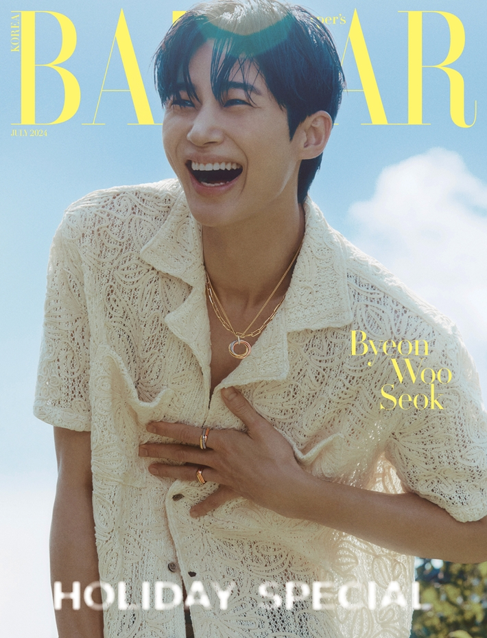

이름
떼떼
static portfolio
이틀째 AI 교육을 듣고 있으며, AI를 활용해 그럴싸한 웹사이트를 만들고 싶은 사람의 포트폴리오입니다.

About
떼떼
010-123-1234
AI 교육을 듣는 중이며, AI를 활용해 그럴싸한 웹사이트를 만들고 싶은 사람입니다.
[사람 확인 필요] CV의 추가 경력과 세부 소개는 아직 확정되지 않았습니다.
Projects
정적 개인 프로페셔널 웹사이트와 브라우저 지렁이 게임을 함께 구성하고 있습니다.
반응형 화면, 게임 메뉴, 지렁이 조작, 배포 흐름은 현재 구현 대상으로 확인되었습니다.
[사람 확인 필요] CV에 구체적으로 적힌 프로젝트가 없어 추가 확인이 필요합니다.
작게 만들고, 확인하고, 안정화하는 방식으로 진행합니다.
Experience
이틀째 AI 교육을 듣고 있으며, 실습 중심으로 웹사이트를 제작하는 중입니다.
정적 웹사이트와 간단한 게임을 직접 연결하는 방식으로 학습 내용을 화면에 옮기고 있습니다.
[사람 확인 필요] 업무 경력이나 직무 이력은 현재 제공된 자료에서 확인되지 않습니다.
확인된 사실만 적고, 나머지는 [사람 확인 필요]로 남기는 쪽을 우선합니다.
Research
반응형 UI, 게임 루프, 입력 처리, 배포 확인 같은 실습형 주제를 다룹니다.
[사람 확인 필요] CV에 명시된 연구 항목은 현재 확인되지 않았습니다.
Games
시작, 이동, 음식, 성장, 점수, 충돌, 게임 오버, 일시정지, 재시작, 최고 점수를 지원합니다. 반대 방향 입력은 막히며, 중복 타이머는 생성되지 않습니다.